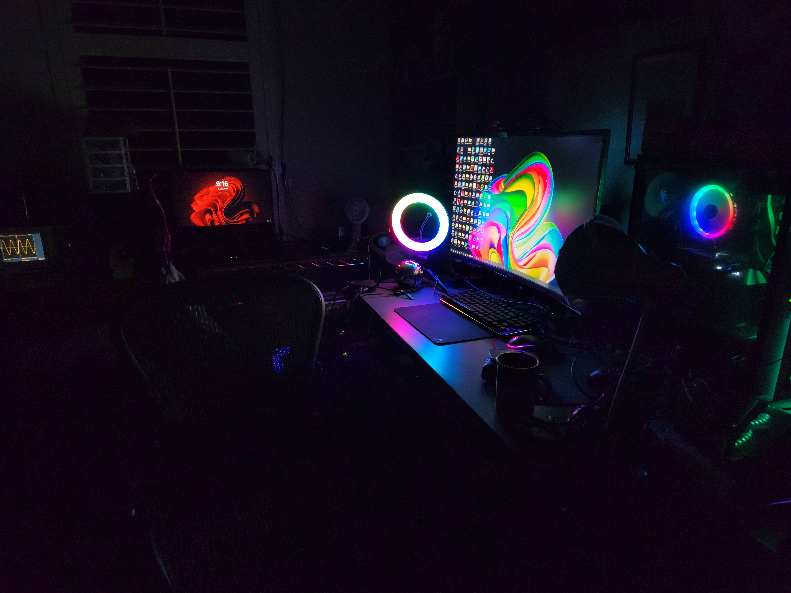

Welcome to TheDoLab!
Lab Time
Local Time
Take a
Video Tour
🎥

Featuring:
1. Web Hosting 📶 + Secure Wireguard VPN 🐲 + Pihole Ad Blocking 🍓
2. Morse Code FM Radio Transmitter 📻
3. Minecraft Servers 🌐
4. Electronic Circuits 💡
5. Computers for Various Computation + NAS/Media Servers
Located in
San Jose, CA
(Est. 2020)
Created by
Timothy Do